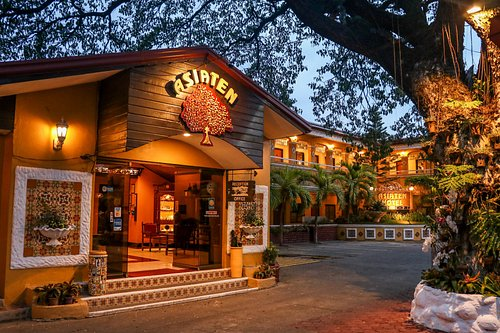
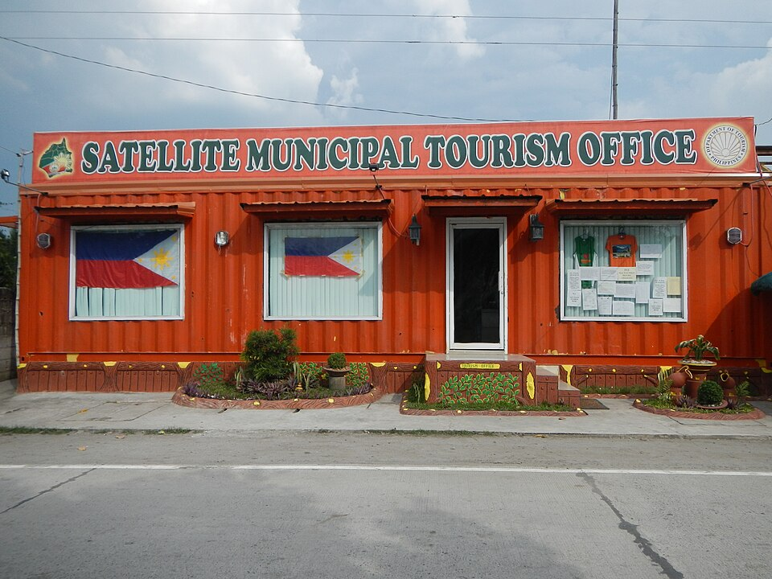
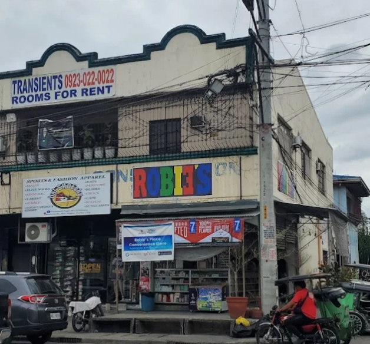

Hostels

Featured Hostels
-

Tarlac Backpackers Inn -

Capas Trekkers Hostel -

Central Luzon Hostel
Hostels in Tarlac are the go-to choice for backpackers, solo adventurers, and budget-conscious travelers who want a clean, safe place to sleep without overspending. Beyond affordability, they offer something valuable — a built-in community of fellow travelers who swap tips, share rides, and sometimes turn into travel companions.
About These Hostels
- Tarlac Backpackers Inn: Located on a busy commercial street in Tarlac City, this hostel offers 6-bed dormitory rooms and private single rooms with lockers, shared bathrooms, and a common lounge with free Wi-Fi. Staff are well-versed in budget travel around Central Luzon and can point you toward cheap eats, jeepney routes, and affordable day trips.
- Capas Trekkers Hostel: Built around the needs of Pinatubo adventurers. Bunk-style dorms with individual reading lights and USB charging ports, a gear storage room, a drying area for wet equipment, and a communal kitchen. Pre-dawn checkouts and early breakfast are standard here given trek schedules.
- Central Luzon Hostel Tarlac: A newer, more social hostel with a rooftop terrace, a small cafe serving budget meals, and a community board with local travel guides and pinned recommendations. Occasionally hosts informal traveler gatherings where guests plan day trips together.
Hostel Facilities & Perks
- Dormitory & Private Options: All three hostels offer both shared dormitory beds and private rooms, giving solo travelers the flexibility to choose based on budget. Dormitory beds are significantly cheaper and come with personal lockers for valuables.
- Communal Spaces: Shared kitchens, lounges, and rooftop areas are standard features that make hostels more than just a place to sleep. These spaces are where travelers meet, share meals, and plan their Tarlac itinerary together.
- Gear & Trek Support: Capas Trekkers Hostel specifically offers gear storage, drying racks, and staff who can arrange 4x4 vehicles and guides for the Pinatubo trek — making it a full-service base for the hike.
Budget Travel Tips in Tarlac
- Eat at the Public Market: Tarlac City's public market offers freshly cooked Filipino meals for under 80 pesos. Hostel staff can point you to the best stalls for breakfast, lunch, and merienda.
- Use Jeepneys for Getting Around: Jeepneys connect Tarlac City to most municipalities for very low fares. Combined with tricycles for shorter distances, you can explore a large portion of the province without spending much on transport.
- Book Pinatubo Treks Early: The Pinatubo trek is the main draw for many hostel guests. Registration at Sta. Juliana fills up quickly on weekends. Book your slot and arrange your 4x4 vehicle at least three days in advance to avoid missing out.